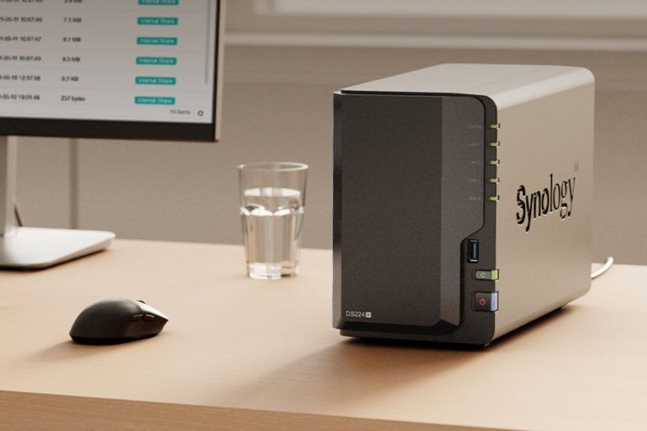
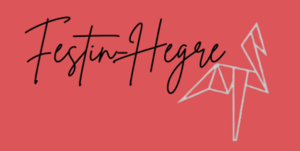
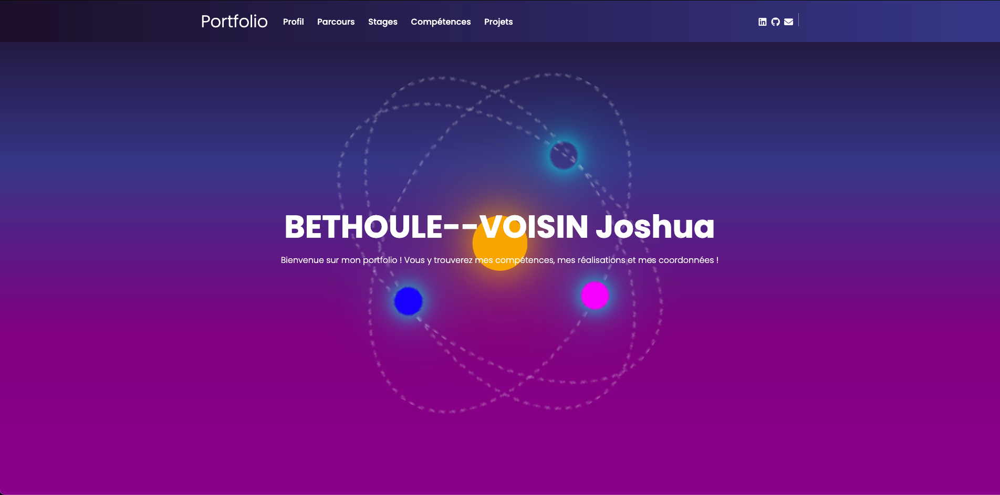
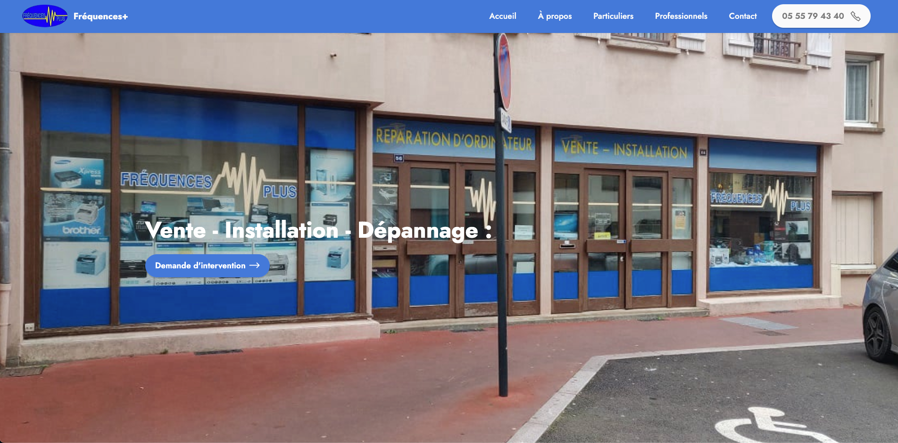

Projets

Projet : NAS Synology
Déploiement et configuration d'un NAS Synology pour la gestion des données personnelles et professionnelles.
Projet NAS Synology
Ce projet consiste en la mise en place d'un serveur NAS Synology pour stocker et gérer mes données personnelles ainsi que professionnelles de manière sécurisée et accessible à distance.
J'ai utilisé le système d'exploitation DSM (DiskStation Manager) pour configurer les différentes fonctionnalités telles que la sauvegarde automatique des fichiers, la gestion des utilisateurs et des permissions, ainsi que la configuration d'un serveur multimédia pour la diffusion de contenu.
Une attention particulière a été portée sur la sécurité avec la mise en place de connexions chiffrées et la gestion des droits d'accès aux dossiers partagés.
Le NAS permet également la virtualisation avec Docker pour héberger plusieurs applications web et services internes, offrant ainsi une solution polyvalente à long terme.
Enfin, une stratégie de sauvegarde et de récupération des données a été mise en place avec une double réplication, garantissant la sécurité des données en cas de défaillance du système.
Ce projet m'a permis d'approfondir mes connaissances en gestion de stockage réseau, virtualisation et sécurité des données.
| 📆 Date | 🖥️ Technologies utilisées | 📂 Fonctionnalités | 🔒 Sécurité |
|---|---|---|---|
|
|
|
|

Projet : FestinHègre
FestinHègre est une application web Symfony qui permet la gestion d’un restaurant, incluant la prise de réservations, la gestion des tables, des menus, des réductions, ainsi que le suivi des clients et des services.
Projet FestinHègre
Ce projet consiste en le développement d’une application web avec le framework Symfony, dédiée à la gestion complète d’un restaurant, visant à centraliser les opérations courantes de manière efficace, sécurisée et évolutive.
Réalisé en équipe, ce projet constitue ma première véritable expérience de développement d’application web complète avec Symfony. Bien qu’il soit encore loin d’être entièrement finalisé, il m’a offert un terrain d’apprentissage, me permettant de découvrir les bonnes pratiques, mais aussi de prendre conscience des erreurs commises au départ.
L’application permet la gestion des réservations, des tables, des menus, des réductions (fidélité et promotions planifiées), ainsi que le suivi des clients. Une interface claire et intuitive a été conçue pour faciliter l'utilisation par le personnel du restaurant.
Un soin particulier a été apporté à la structure du code, à l’organisation de la base de données (PostgreSQL) et à la mise en place d’un système d’authentification sécurisé pour les différents utilisateurs, avec une gestion fine des rôles et permissions.
Le projet intègre également des fonctionnalités avancées comme l’affichage dynamique des réservations dans un calendrier hebdomadaire, et la gestion des données en temps réel, offrant un gain de productivité et une meilleure expérience client.
Enfin, ce projet m’a permis d’approfondir mes compétences en développement back-end avec Symfony, en conception de base de données relationnelle, et en mise en place d’architectures sécurisées et maintenables dans un contexte professionnel. C’est aussi à travers ce projet que j’ai le plus appris jusqu’à présent, en identifiant progressivement de nombreuses lacunes et problèmes techniques survenus lors du développement initial.
| 📆 Date | 🖥️ Technologies utilisées | 📂 Fonctionnalités | 🔒 Sécurité |
|---|---|---|---|
|
|
|
|

Projet : Portfolio
Ce portfolio me permet de me présenter, de mettre en valeur mes compétences en développement web, ainsi que de présenter les projets et réalisations que j’ai menés au cours de mon parcours.
Projet Portfolio
Le projet consiste en la création d'une plateforme personnelle "Portfolio", entièrement réalisée en CSS, HTML et JavaScript, permettant de présenter mes compétences, mes réalisations et mon parcours en tant que développeur web. Ce projet m'a permis de mettre en pratique mes connaissances en HTML, CSS, JavaScript, et PHP, tout en utilisant des frameworks modernes comme Symfony.
Ce portfolio a été conçu pour être à la fois simple et professionnel, avec une interface claire et intuitive. Il sert de vitrine pour mes projets passés et actuels, et m’a permis de mieux comprendre l’importance d’une bonne organisation, d’une architecture claire du code et de l'optimisation de l’expérience utilisateur.
Le projet m'a aussi permis de renforcer mes compétences en développement front-end, en intégrant des fonctionnalités comme des carrousels d'images, des sections interactives, et une structure dynamique. C'est également une occasion de montrer mes compétences en matière de gestion de contenu et d'interface utilisateur, tout en respectant les meilleures pratiques en matière de design web.
Ce projet m’a apporté une réelle expérience dans la création et la gestion d'un site web personnel, me permettant de mettre en avant non seulement mes compétences techniques, mais aussi ma capacité à communiquer et à structurer mon travail de manière professionnelle. Il reste une étape importante de mon parcours, et un outil qui me permet d'évoluer en tant que développeur.
Enfin, ce portfolio est un projet en constante évolution, ce qui me permet d'ajouter régulièrement de nouveaux projets, d'expérimenter de nouvelles technologies et d'améliorer continuellement l’interface et la fonctionnalité du site.
| 📆 Date | 🖥️ Technologies utilisées | 📂 Fonctionnalités |
|---|---|---|
|
|
|
Projet : StudyTrack
StudyTrack est une application mobile en MAUI permettant aux élèves de suivre leurs notes, calculer leurs moyennes et débloquer des badges selon leur progression.
Projet : StudyTrack
StudyTrack est une application mobile développée avec .NET MAUI. Elle permet aux élèves de suivre leurs notes, calculer leurs moyennes, voir leurs matières et suivre leur progression scolaire depuis leur téléphone.
Toutes les données (notes, projets, matières...) sont stockées en local avec SQLite, donc l’application fonctionne même sans internet. L’élève peut ajouter ses notes, voir la moyenne générale ou par matière, et recevoir des badges selon ses résultats ou projets accomplis.
Le but est de rendre le suivi plus simple et motivant, avec une interface claire et rapide à prendre en main. L’élève peut voir où il en est, et organiser son travail plus facilement.
Ce projet est notre deuxième projet réalisé en BTS, et il a été mené en groupe.
Ce projet m’a appris à utiliser MAUI, gérer une base SQLite, à créer plusieurs pages reliées entre elles, et à afficher des infos en temps réel.
| 📆 Date | 🖥️ Technologies utilisées | 📂 Fonctionnalités | 📱 Plateforme & Données |
|---|---|---|---|
|
|
|
|

Projet : APICinéma
APICinéma est une API REST en C# permettant de récupérer des informations détaillées sur des films, avec Entity Framework et une base de données PostgreSQL.
Projet : APICinéma
Le projet APICinéma est une API REST développée en C# avec .NET, utilisant Entity Framework Core pour interagir avec une base de données PostgreSQL. Cette API permet de récupérer des informations détaillées sur des films, telles que le nom du film, son affiche, les acteurs, les langues disponibles, le coût de production et bien plus encore.
L’objectif de ce projet est de créer une interface pour consulter les informations d’un cinéma de manière structurée et optimisée. Grâce à Entity Framework, les données sont récupérées et manipulées efficacement à partir de la base de données, tout en respectant les principes de conception d’une API RESTful.
Cette API a été conçue pour être utilisée par d'autres applications, comme un site web ou une application mobile, afin d'afficher des informations cinématographiques de manière dynamique et en temps réel.
Ce projet m’a permis de développer mes compétences en C# en explorant la mise en place d’une API robuste, sécurisée et évolutive.
| 📆 Date | 🖥️ Technologies utilisées | 📂 Fonctionnalités | 🔒 Sécurité |
|---|---|---|---|
|
|
|
|

Projet : Fréquence+
Fréquence+ est un site vitrine responsive, réalisé en HTML, CSS et JavaScript, pour une entreprise proposant des services informatiques variés.
Projet : Fréquence+
Fréquence+ est un site vitrine conçu pour représenter une entreprise informatique offrant plusieurs services comme le développement web, la vente de matériel informatique, la maintenance et l’installation de solutions informatiques pour particuliers et professionnels.
Le site a été entièrement réalisé en HTML, CSS et JavaScript, ce qui m’a permis de travailler en profondeur sur la structure, l’ergonomie et le design responsive. L’objectif était d’obtenir une interface propre, claire, et adaptée à tous les types d’écrans.
Une des fonctionnalités clés du site est l’intégration d’un formulaire de contact dynamique, relié à PHPMailer. Grâce à ce système, les visiteurs peuvent envoyer des messages directement depuis le site, qui sont ensuite transférés par email à l’entreprise.
Ce projet m’a permis d’approfondir mes compétences en front-end pur (HTML/CSS/JS), tout en manipulant une solution simple de back-end (PHP) pour les échanges avec les utilisateurs.
| 📆 Date | 🖥️ Technologies utilisées | 📂 Fonctionnalités | 🔒 Sécurité |
|---|---|---|---|
|
|
|
|